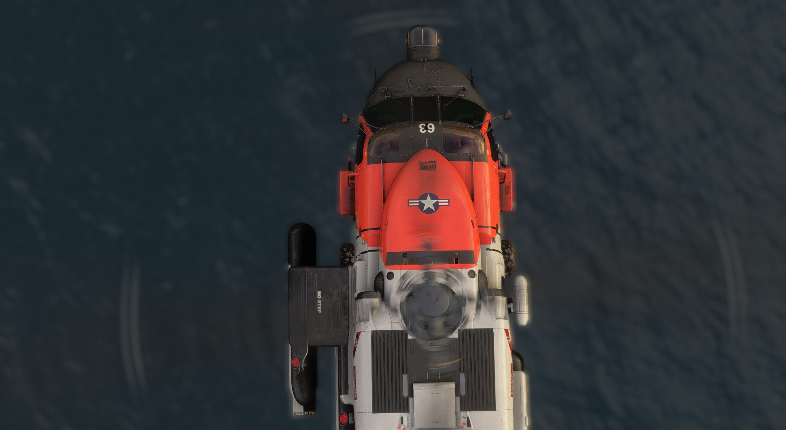

Welcome to the vUSCG
Where the Skies Meet the Sea

About Us
The Virtual USCG uses home flight simulator software such as X-Plane, Microsoft Flight Simulator and Prepar3D to simulate the operations of the real world United States Coast Guard. We make every effort to faithfully recreate the operations of our real life counterpart while also fostering a space for pilots of any experience level to enjoy!
Mission and Purpose:Dedicated to providing a realistic and immersive experience, the vUSCG is not just a virtual flight sim community; it's a hub where enthusiasts can embark on daring search and rescue missions, engage in law enforcement operations, and contribute to environmental protection efforts. Our mission is to foster a sense of camaraderie among our members while honing their skills in the dynamic realm where the skies meet the sea.
Immersive Experiences:Experience the thrill of piloting iconic Coast Guard aircraft, from the mighty HC-130 Hercules to the agile MH-65 Dolphin. Navigate through challenging weather conditions, coordinate with fellow virtual Coast Guard units, and undertake diverse missions that mirror the real-world responsibilities of the US Coast Guard.
Realistic Environments:Explore meticulously crafted coastal environments that mirror the actual locations where Coast Guard operations unfold. Our operations take us to unique scenery includes bustling ports, serene lighthouses, and expansive seascapes, providing the backdrop for your virtual adventures.
Community Collaboration:Join a community where collaboration is key. Whether you're a seasoned virtual pilot, a maritime enthusiast, or someone looking to learn the ropes, the vUSCG is a place where individuals with diverse backgrounds come together to share knowledge, experiences, and a common love for aviation and maritime activities.
Dynamic Simming:Participate in dynamic search and rescue scenarios, law enforcement operations, and environmental protection missions. Oeprations on the VATSIM network allows you to team up with fellow members for joint operations, training exercises, and unforgettable adventures in the virtual skies.
Join the vUSCG today and let your virtual adventures soar to new heights as you become part of a community that honors the legacy and service of the US Coast Guard.
Fair winds and following seas!